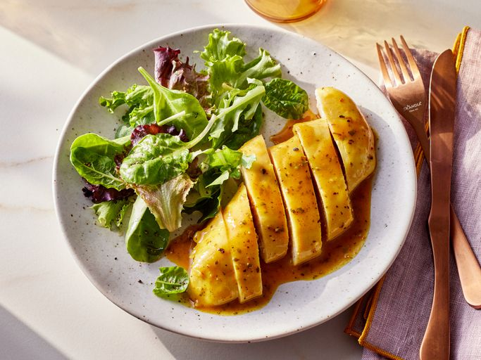

Baked Honey Mustard Chicken

Description
This honey mustard chicken is quick and simple to prepare by baking chicken breasts with a sweet honey and mustard glaze that's full of flavor. The kids love it too!
Ingredients
- Cooking spray
- 6 skinless, boneless chicken breast halves
- Salt and pepper to taste
- ½ cup honey
- ½ cup prepared mustard
- 1 teaspoon dried basil
- 1 teaspoon paprika
- ½ teaspoon dried parsley
Directions
- Gather all ingredients. Preheat the oven to 350 degrees F (175 degrees C). Lightly grease a 9x13-inch baking dish with cooking spray.
- Season chicken breasts with salt and pepper. Place in the prepared baking dish.
- Combine honey, mustard, basil, paprika, and parsley in a small bowl; mix well. Pour 1/2 of the honey mustard mixture over chicken and brush to cover.
- Bake in the preheated oven for 15 minutes. Turn chicken pieces over and brush with remaining honey mustard mixture. Continue baking until chicken is no longer pink and juices run clear, 10 to 15 minutes more. An instant-read thermometer inserted into the center should read at least 165 degrees F (74 degrees C)
- Let chicken rest for 10 minutes before serving. Enjoy!
Source
Home